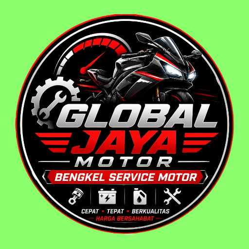

🖼️ Galery Bengkel



GLOBAL JAYA MOTOR✅ Teknisi berpengalaman & terlatih
✅ Suku cadang asli & berkualitas terjamin
✅ Harga transparan, biaya diperjelas sebelum dikerjakan
✅ Pengerjaan cepat & tepat waktu
✅ Layanan ramah, nyaman, dan jujur
Perawatan dan perbaikan mesin motor agar kembali optimal.
Pengecekan dan penyetelan mesin secara menyeluruh.
Penggantian oli mesin dan pemeriksaan kondisi oli.
Membersihkan, menyetel, dan memperbaiki sistem karburator.
Perbaikan kabel, lampu, aki, starter, pengapian, sekring.
Pengecekan, penggantian, dan perbaikan piston/seher.
Pengerjaan komponen mesin yang butuh proses bubut khusus.
Penggantian ban depan/belakang serta pemeriksaan kondisi ban.
Perawatan dan perbaikan CVT untuk motor matic.
Pengecekan, penyetelan, dan penggantian rantai serta gear.
Pemeriksaan dan perbaikan rem cakram maupun tromol.
Pengecekan aki, sistem starter elektrik dan starter motor.
Perbaikan lampu utama, rem, sein, klakson.
Pemeriksaan dan perbaikan sistem bahan bakar & saluran bensin.
Pengecekan radiator, coolant, kipas, dan pendingin motor.
Pemeriksaan dan perbaikan masalah pada sistem knalpot.
Perbaikan dan penggantian berbagai komponen & body motor.
Pemeriksaan kondisi motor untuk mengetahui sumber masalah.
"Servis cepat, motor jadi halus lagi. Harga jelas di awal, jujur. Langganan!"
⭐⭐⭐⭐⭐"CVT gredek hilang total setelah servis di sini. Teknisi ramah."
⭐⭐⭐⭐⭐📍 Servis • Perawatan • Perbaikan • Diagnosa
🔩 Kerusakan Ringan • Sedang • Berat
Jl. Raya Batam Center No.88 - Belakang SPBU
Buka 08.00 - 21.00 WIB - Minggu Tetap Buka